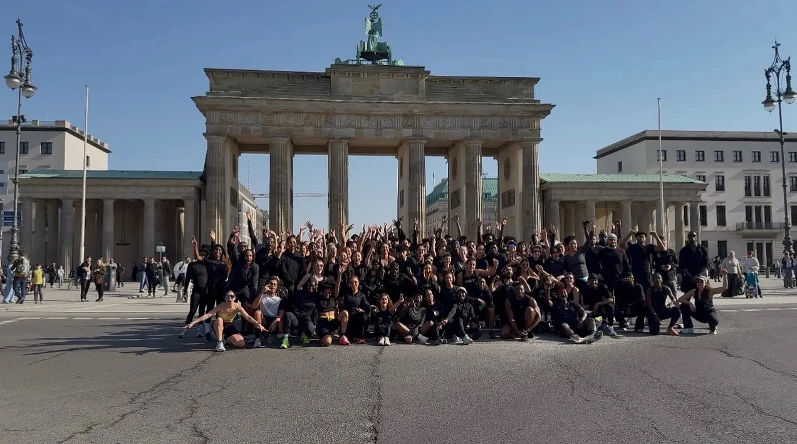

04 / THE STORYEPISODE NO. 001
IT STARTED
WITH A RUN.

It started with a run. In February, during Black History Month, a community ran through Berlin to understand the city's place in colonialism.
Camera in hand, I planned a one-minute reel. Instead, I ended up with a 24-minute film about running, belonging, and what it means to keep moving toward yourself.
This first episode is where that story begins: with the run, the people in it, and the question that started everything.
WATCH EPISODE ONEREAD THE FULL STORY